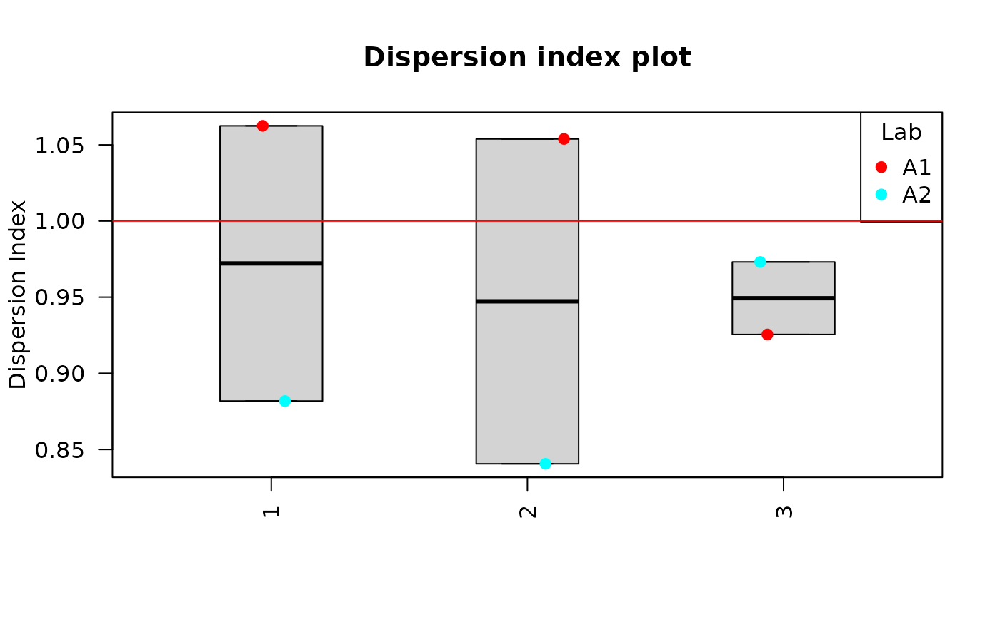
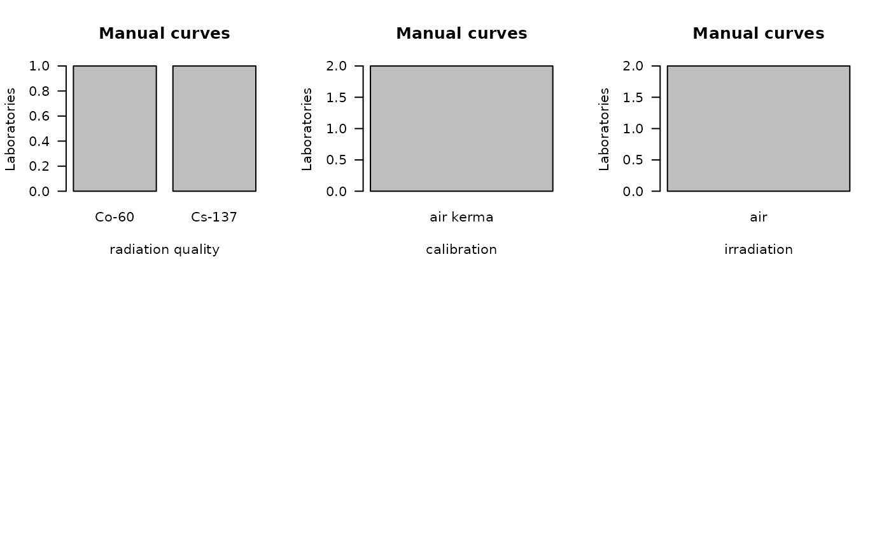

Load estimation results
The first step is to select how many laboratories are going to
participate in the comparison and upload their corresponding Estimation
results file. Those files must be in .rds format obtained
in the dose estimation module in Biodose Tools. Clicking on “Dose
estimation summary” will load the files into the app and display the
contained information on the “Results” tabbed box in four different
tables: (1) Data summary, with total number of cells
(),
total number of aberrations
(),
mean
(),
standard error
(),
dispersion index
(),
and
-value,
as well as the dose estimation with the upper and lower limits, the
()
name identifying each case with their corresponding ID, the
(),
the
()
and the
()
of method used for the scoring of the curve used for the estimation. (2)
Curves, with the
(),
the
()
and the
()
as well as the used curve coefficients, standard errors
()
and several irradiation conditions. Tables (3) and (4) will display for
each Lab ans Sample the dose estimation for “Dose” and the Frequencies
for “Frequencies”.
‘Data Input’ box and ‘Results’ tabbed box in the interlaboratory
comparison module when loading curves from an .rds file for
two laboratories.
This step is accomplished in R by loading an existing
.rds object via readRDS():
fit_results_A1 <- system.file("extdata", "A1_Estimation_results.rds", package = "biodosetools") %>%
readRDS()
fit_results_A2 <- system.file("extdata", "A2_Estimation_results.rds", package = "biodosetools") %>%
readRDS()And then calling ’summary_curve_tables()`:
list_lab_names <- list("A1", "A2")
all_rds <- list(fit_results_A1, fit_results_A2)
tables_list <- summary_curve_tables(
num_labs = 2,
list_lab_names,
all_rds
)Plot data input
Clicking on “Plot summary” will display four different plots in the “Plots summary” Results tabbox.
This step is accomplished in R by calling:
yield_boxplot(), dose_boxplot(),
u_test_plot() and DI_plot() functions:
yield_boxplot(
dat = tables_list[[1]],
place = "UI"
)
dose_boxplot(
dat = tables_list[[1]],
place = "UI"
)
u_test_plot(
dat = tables_list[[1]],
place = "UI"
)
DI_plot(
dat = tables_list[[1]],
place = "UI"
) Clicking on “Plot curves” on the Curve section on the Results tabbox will display four different plots in the “Plots curves” Results tabbox.In this example all curves were manually scored, therefore there are only two plots.
This step is accomplished in R by calling:
curves_plot()and bar_plots() functions:
curves_plot(
dat = tables_list[[2]],
curve = "manual",
curve_type = "lin_quad",
place = "UI"
)
bar_plots(
dat = tables_list[[2]],
curve = "manual",
place = "UI"
) ## Performe Z-score
The final step is to select the Input type between “Dose” or “Frequency”, the algorithm among “AlgA”, “AlgB and”QHampel” and provide the reference value for each sample (only when Dose input is selected).
‘Z-score Data input options’ in the interlaboratory comparison module.
Clicking “Calculate and plot” will display the results table:
‘Z-score Results table’ in the interlaboratory comparison module.
To calculate the Z-Score in R we can call
calc.zValue.new():
zscore_S1 <- calc.zValue.new(
X = tables_list[[1]][["estimate"]][1:2],
type = "dose",
alg = "algA",
c = 2.56
)
zscore_S2 <- calc.zValue.new(
X = tables_list[[1]][["estimate"]][3:4],
type = "dose",
alg = "algA",
c = 3.41
)
zscore_S3 <- calc.zValue.new(
X = tables_list[[1]][["estimate"]][5:6],
type = "dose",
alg = "algA",
c = 4.54
)We can generate the plots in R by calling:
plot_zscore_all(), plot_deviation_all,
plot_interlab_v2(), plot_interlab_deviation()
and plot_triage_interlab() functions:
data_frame_zscore <- data.frame(
Lab = tables_list[[1]][["Lab"]],
Sample = tables_list[[1]][["Sample"]],
Type = tables_list[[1]][["Type"]],
Reference = c(2.56, 3.41, 4.54),
Dose = tables_list[[1]][["estimate"]],
Deviation = tables_list[[1]][["estimate"]] - c(2.56, 3.41, 4.54),
Zscore = c(zscore_S1, zscore_S2, zscore_S3),
stringsAsFactors = FALSE
)
plot_1 <- plot_zscore_all(
zscore = data_frame_zscore,
select_method = "algA",
place = "UI"
)
plot_2 <- plot_deviation_all(
zscore = data_frame_zscore,
select_method = "algA",
place = "UI"
)
plot_3 <- plot_interlab_v2(
zscore = data_frame_zscore,
select_method = "algA",
sum_table = data_frame_zscore,
place = "UI"
)
plot_4 <- plot_interlab_deviation(
zscore = data_frame_zscore,
sum_table = data_frame_zscore,
place = "UI"
)
line_triage <- list(`1` = 2.56, `2` = 3.41, `3` = 4.54)
plot_5 <- plot_triage_interlab(
line_triage,
sum_table = tables_list[[1]],
place = "UI"
)plot_interlab_v2(),
plot_interlab_deviation() and
plot_triage_interlab() functions generate a list of plots
(1 for each sample).
plot_1Plots generated by {biodosetools}.
plot_2Plots generated by {biodosetools}.
for (p in plot_3) print(p)Plots generated by {biodosetools}.
Plots generated by {biodosetools}.
Plots generated by {biodosetools}.
for (p in plot_4) print(p)Plots generated by {biodosetools}.
Plots generated by {biodosetools}.
Plots generated by {biodosetools}.
for (p in plot_5) print(p)Plots generated by {biodosetools}.
Plots generated by {biodosetools}.
Plots generated by {biodosetools}.